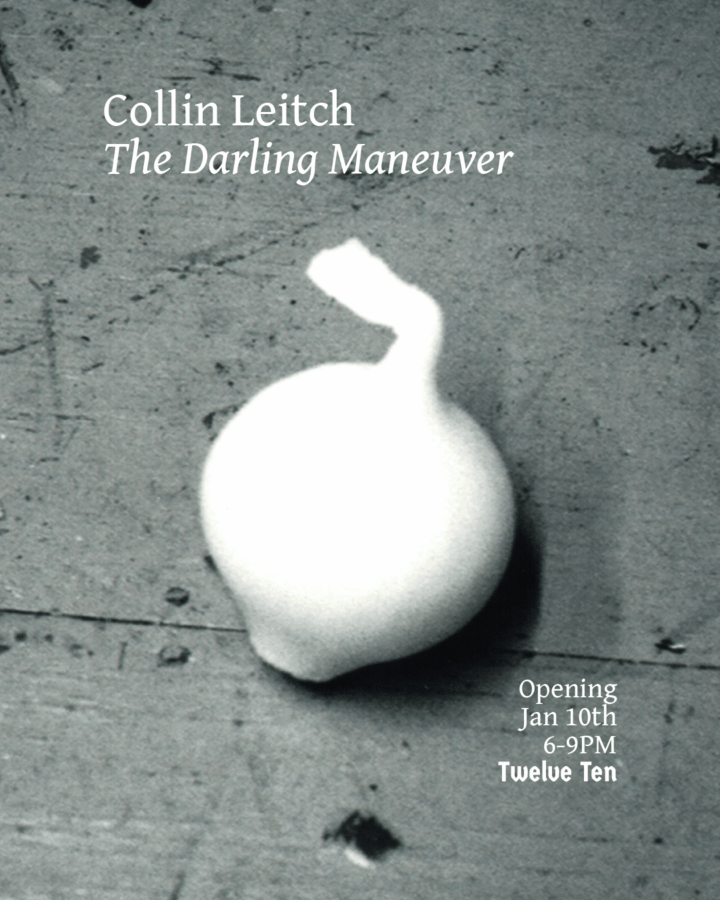

Collin Leitch: The Darling Maneuver
Twelve Ten Gallery is pleased to present “The Darling Maneuver,” an exhibition by Collin Leitch. For his solo presentation at the gallery, Leitch has produced two parallel series of sculptures that explore the material and structural conditions of contemporary three-dimensional manufacture.
The first series consists of four stainless steel panels featuring the motif of an onion repeated in sequential relief and 3D-printed via a process that uses lasers to fuse metal powder. While this is a process that can shape and execute the exact topology of a computer-generated file, Leitch is not so much concerned with realizing a high-fidelity digital reproduction, but the encounter that occurs between form and process as it is physically melded into a material: an onion is a layered body, but this product is an empty fullness. Although it too is generated from a process of layered fusion, the relief only superficially represents the original entity, its core welded into a solid, nullified mass rather than a nestled matryoshka. Leitch identifies the onion as a marker of zero, and its serialized repetition on the plate suggests a count of nothing.
The three other works in the exhibition are tall, oblong wooden reliefs that have been milled from single planks of poplar using a computer-controlled router. Sculpted into open-ended, organic forms, these figures bear the traces of a machined geometry that can be identified as their surface slopes into a vertical crease at the center. Here something hard appears soft, a confrontation that recalls the folds of cloth. In classical sculpture, drapery embellished the forms of a body that it both concealed and revealed. In Leitch’s works it is not a body beneath the surface that is accentuated, but the space subtracted from these bodies.
Leitch’s interest in these technologies stems not from practical or industrial application, but from questions of recording, representation and reproduction. His practice mirrors the investigations of contemporary filmmakers such as Hollis Frampton and Peter Gidal with their explicative structural films, or the proto-cinematic experiments of Eadweard Muybridge, whose pioneering work essayed the potential conditions for a then-nascent tool. Much in the way that these artists approached the camera as a device whose technical activity cuts across the act of representing and its relation to the represented, Leitch is concerned with how his works resist resolution into content, instead operating as generative records of their own processes of production.
Collin Leitch (b. 1993) received a B.A. from Bard College in 2016. Recent exhibitions include the two-person show Point Free with Kayla Jones at Cierah (2024, New York), solo exhibitions World Edit at Shoot the Lobster (2022, New York) and Camera Rider at Team Gallery (2019, New York). He has also participated in group exhibitions at R & Company (New York), As It Stands (Los Angeles), Freddy (New York) and King’s Leap (New York), among many others. His films have been screened at Channels Video Art Festival in Melbourne and a variety of New York spaces, including LUBOV, Mery Gates and Microscope Gallery.